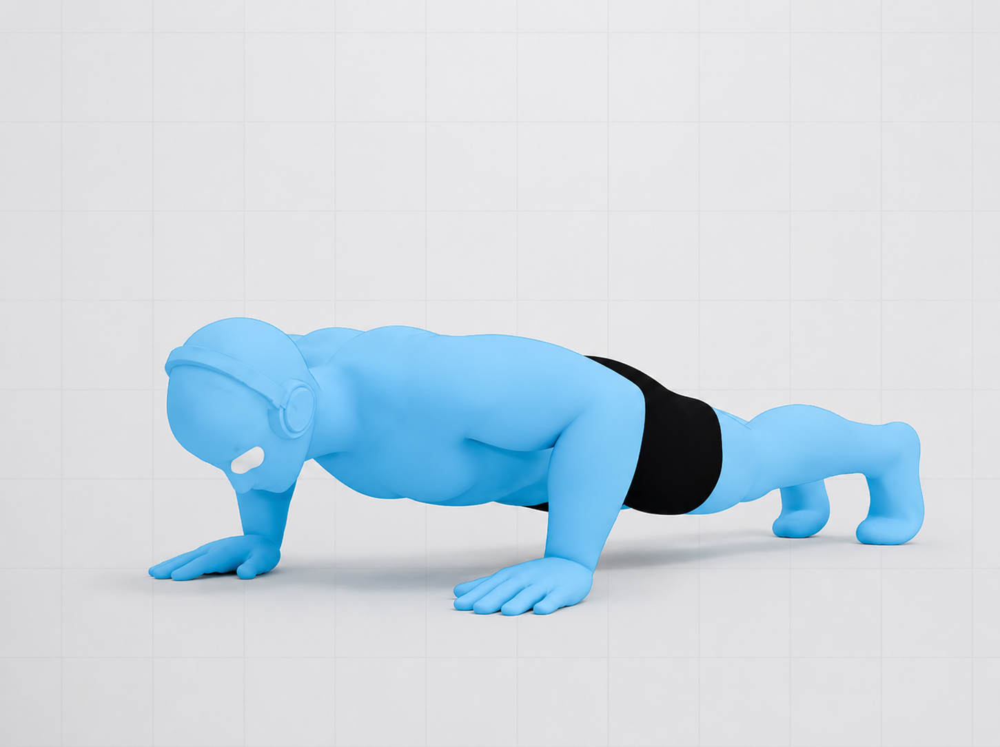
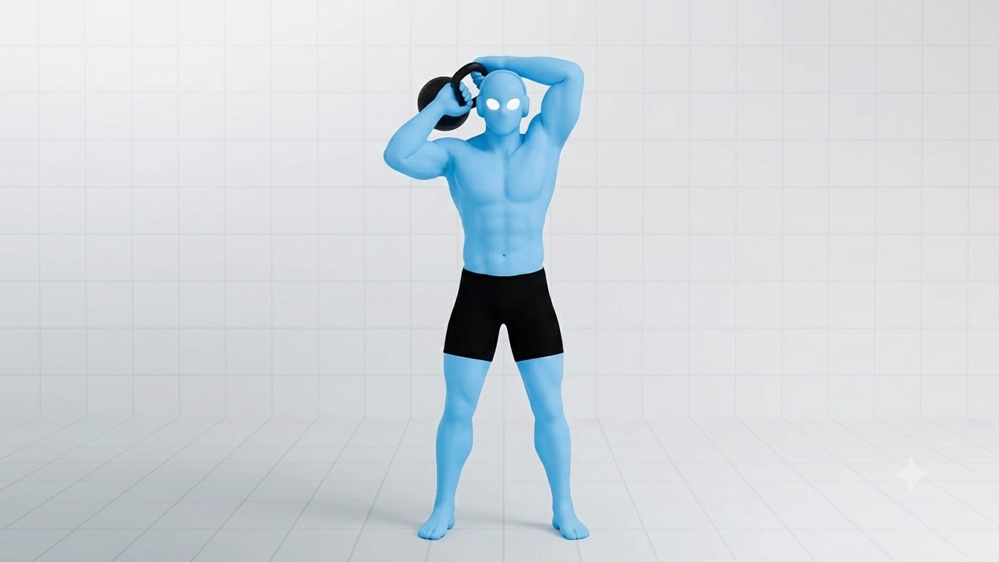
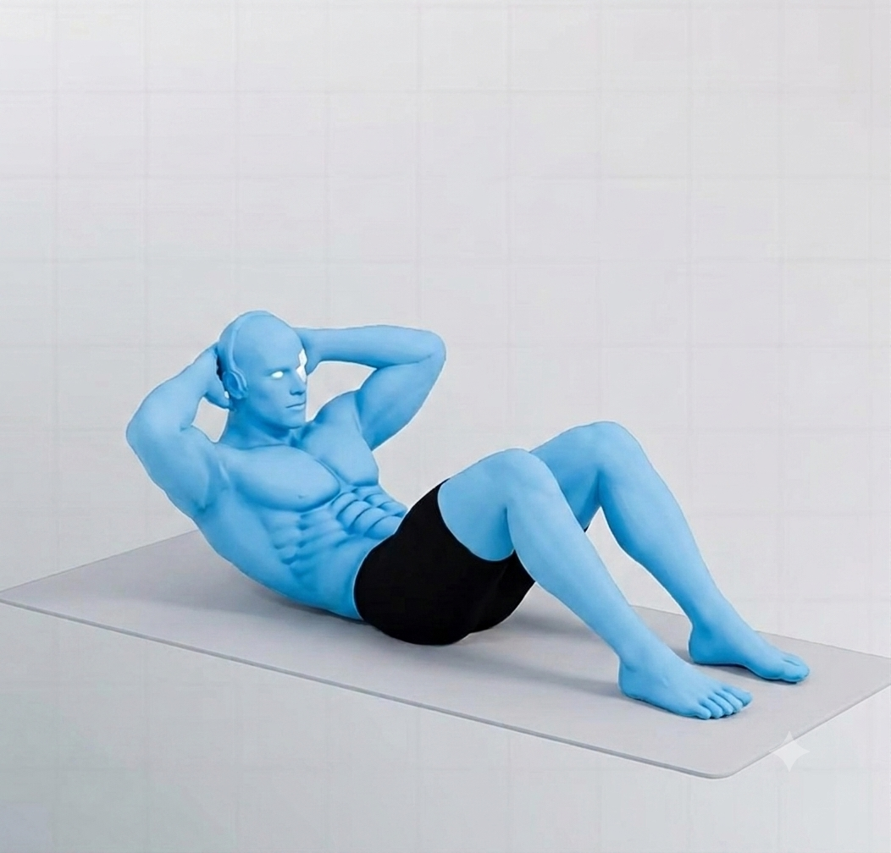
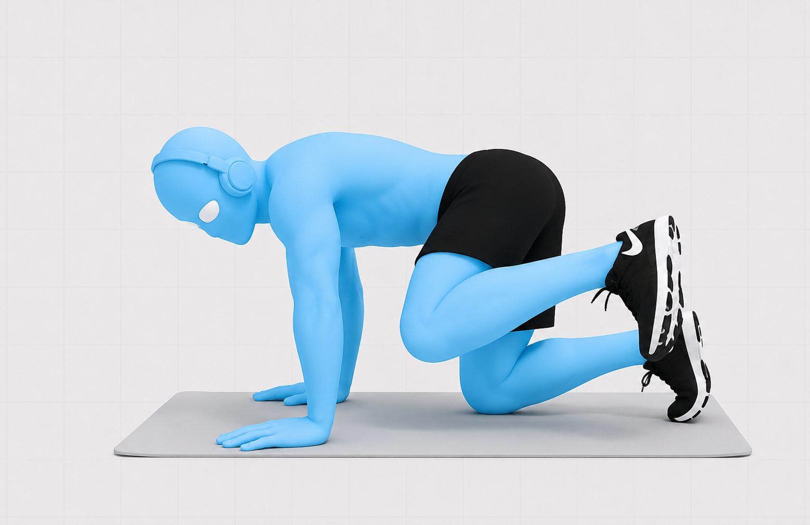
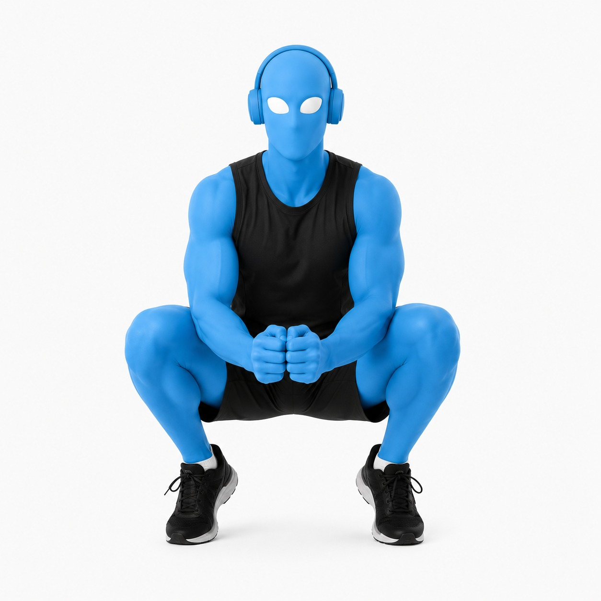
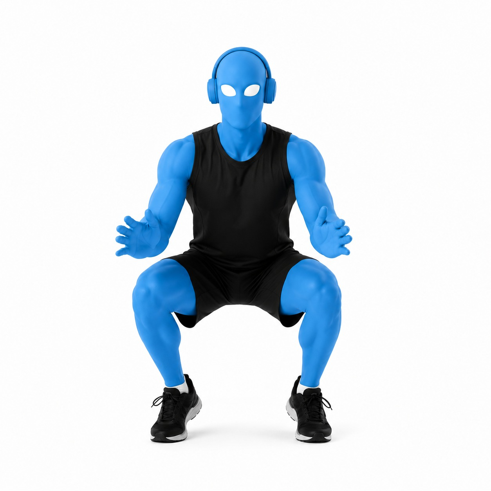
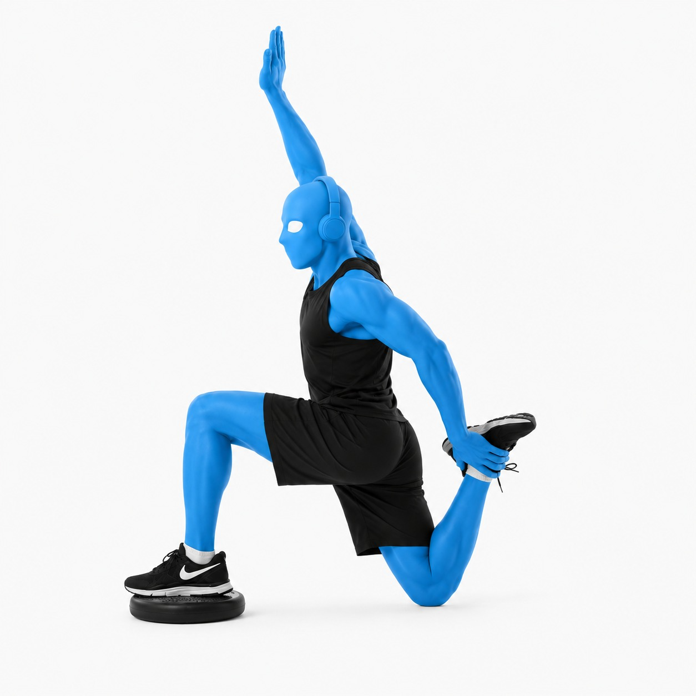
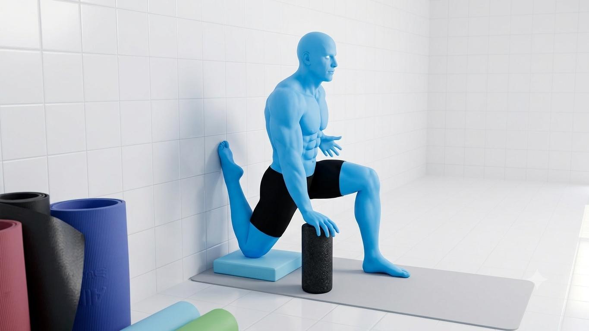
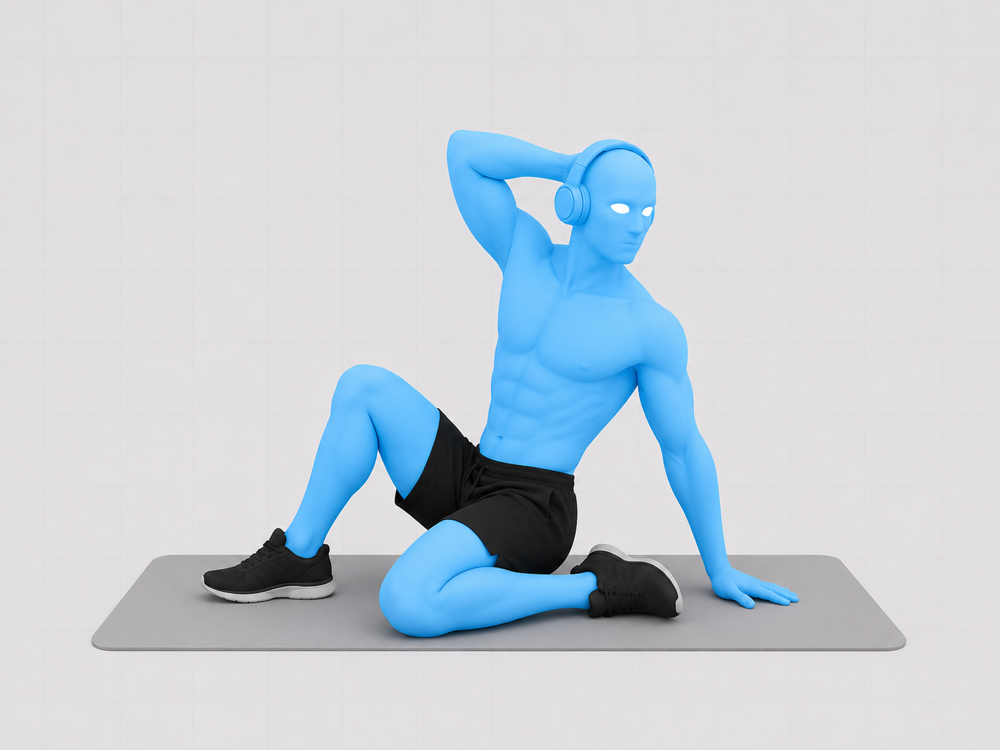
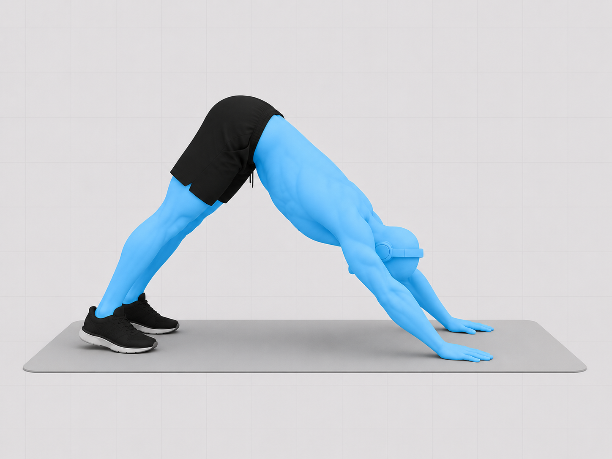

Entrenamiento Básico
Rutina mínima para días complicados: mantiene masa muscular y salud articular en 12–15 minutos.

Flexiones de brazos
Tips Pro de ejecuciónCodos a ~45° del torso, no pegados al cuerpo ni en cruz — es la posición que Athlean-X marca como la más segura para el hombro. Bajá hasta que el pecho casi toque el piso, escápulas libres, core y glúteos apretados como una tabla rígida. Si te resulta fácil, subí la dificultad con pies elevados o pausa de 1 segundo abajo antes de sumar peso.

Halo con Kettlebell
Tips Pro de ejecuciónPeso liviano, la kettlebell viaja pegada a la cabeza en un círculo controlado. Core firme para que no se te vaya la zona lumbar hacia adelante al pasar la pesa por detrás. Movimiento lento, sin usar impulso: el objetivo es lubricar la articulación, no fatigar el hombro.

Abdominales — Dead Bug
Tips Pro de ejecuciónLa zona lumbar se mantiene pegada al piso durante todo el movimiento — esa es la clave, no la velocidad del brazo/pierna. Bajá el brazo y la pierna opuesta lento, exhalá al extender, y si la lumbar se despega, reducí el rango.
Jump Attack
Programa principal de salto — 12 semanas reales (90 días), en 3 fases: Fuego, Fuerza y Vuelo. Cada fase dura 4 semanas: 3 semanas de trabajo + 1 semana de descarga.
🔥 Mes 1 — Fuego: aprendemos a sostener posiciones, como una estatua que tiembla un poquito.
💪 Mes 2 — Fuerza: juntamos sostener + saltar, para que el cuerpo aprenda a explotar.
🚀 Mes 3 — Vuelo: todo más rápido y más explosivo, como si tuvieras resortes en las piernas.
Entrenás Lunes, Martes, Jueves y Viernes. Miércoles, Sábado y Domingo son de descanso — pero podés jugar a tu deporte, no te quedes en el sillón. Cada 4 semanas hay una semana más suave (de descarga) para que el cuerpo se recupere: ahí NO se levanta peso, solo se juega y se mueve.
—
Elegí una fecha de inicio para ver tu calendario.
Semanas 1 a 4
Piernas Implacables (Día 1 y 4) + Cuerpo Total Implacable (Día 2 y 5). La Semana 4 es descarga.
Día de cuerpo entero (Mar/Vie): 7 ejercicios de "quedarse quieto sosteniendo" (holds), uno atrás del otro, sin estiramiento entre medio. El tiempo que aguantás sube cada semana.




Secuencia 1 — Sentadilla de puntillas
| Semana | Hold (sostener) | Bomba (pulsos) |
|---|---|---|
| Semana 1 | 60 seg | 15 reps |
| Semana 2 | 90 seg | 10 reps |
| Semana 3 | 120 seg | 5 reps |
| Semana 4 | Descarga — bajá volumen | |
Hidrantes: apoyo en cuatro puntos, levantá la rodilla hacia el costado sin rotar la cadera, empujá con el glúteo medio, no con la zona lumbar (10 adelante, 10 atrás, 10 al costado, por pierna). Hold de sentadilla de puntillas: sentadilla parcial parado en la punta de los pies, core firme, peso repartido en los metatarsos. Bomba: mismos rangos, pulsos cortos sin perder la altura del talón. Cerrá con el estiramiento de flexor de cadera, 30s por lado, sin rebotar.


Secuencia 2 — Estocada (Lunge)
| Semana | Hold | Bomba |
|---|---|---|
| Semana 1 | 60 seg | 15 reps |
| Semana 2 | 90 seg | 10 reps |
| Semana 3 | 120 seg | 5 reps |
| Semana 4 | Descarga | |
Hold de estocada: rodilla de adelante alineada con el pie (no colapsa hacia adentro), torso alto, sostené la posición baja sin apoyar la rodilla trasera. Bomba: pulsos pequeños en el mismo rango, sin bloquear la respiración.


Secuencia 3 — Estocada búlgara elevada
| Semana | Hold | Bomba |
|---|---|---|
| Semana 1 | 60 seg | 15 reps |
| Semana 2 | 90 seg | 10 reps |
| Semana 3 | 120 seg | 5 reps |
| Semana 4 | Descarga | |
Pie trasero apoyado en un banco, peso casi todo en la pierna de adelante. En el hold, torso ligeramente inclinado adelante sin perder el equilibrio; en la bomba, pulsos cortos controlando que la rodilla no se vaya hacia adentro.


Secuencia 4 — Peso muerto piernas rectas
| Semana | Hold | Bomba |
|---|---|---|
| Semana 1 | 60 seg | 15 reps |
| Semana 2 | 90 seg | 10 reps |
| Semana 3 | 120 seg | 5 reps |
| Semana 4 | Descarga | |
Bisagra de cadera con piernas casi rectas, espalda neutra (no redondeada), el movimiento sale de la cadera, no de la lumbar. En el hold, sostené el punto de máximo estiramiento de isquiotibiales que puedas controlar.


Secuencia 5 — V-Up (core + pantorrilla)
| Semana | Hold | Bomba |
|---|---|---|
| Semana 1 | 60 seg | 15 reps |
| Semana 2 | 90 seg | 10 reps |
| Semana 3 | 120 seg | 5 reps |
| Semana 4 | Descarga | |
Acostado, elevá tronco y piernas formando una V, brazos buscando los pies. En el hold, lumbar pegada al piso (no arqueada). Cerrás con estiramiento de pantorrilla en V en vez del estiramiento de cadera.
Hacé los 7 ejercicios seguidos, sin pre-fatiga ni estiramiento entre medio. Semana 1: 30s · Semana 2: 60s · Semana 3: 90s · Semana 4: descarga (volvé a 30s o bajá volumen).

1. Mantener la flexión (push-up hold)
Tips ProSostené la posición baja de la flexión, codos cerca del cuerpo (~45°), cuerpo en línea recta de cabeza a talones, sin que la cadera se hunda.

2. Soporte de dominada (pull-up hold)
Tips ProMentón sobre la barra, escápulas activas hacia abajo y atrás, evitá que los hombros se encojan hacia las orejas.

3. Soporte aéreo
Tips ProCore y hombros sostienen la posición, no el cuello. Buscá la técnica más controlada que puedas mantener todo el tiempo.

4. Mantener el bícep
Tips ProCodo fijo pegado al torso durante todo el mantenimiento, sostené el ángulo medio sin que el brazo empiece a temblar y perder la posición.

5. Mantener la flexión de tríceps
Tips ProCodos apuntando hacia atrás (no hacia los costados), sostené el ángulo medio de extensión sin que el codo se abra.

6. Soporte de tablón de rana
Tips ProRodillas abiertas hacia los costados con los pies juntos, cadera baja y controlada, core firme.

7. Soporte en plancha lateral
Tips ProCadera elevada en línea recta con el torso, no dejes que se hunda. Repetí el tiempo completo de cada lado.
Semanas 5 a 8 — Piernas de Poder
Acá se combina pesas + salto en la misma secuencia (superserie). El hold ahora baja de tiempo semana a semana mientras el ejercicio explosivo se vuelve más intenso — el cuerpo llega "precansado" al salto para aprender a ser explosivo bajo fatiga. Semana 8 es descarga.

Secuencia 6 — Sentadillas sentadas + Estocada Buttkicker
| Semana | Hold sentadilla | Estocada buttkicker |
|---|---|---|
| Semana 5 | 30s + 10 reps | 10 x lado |
| Semana 6 | 20s + 10 reps | 8 x lado |
| Semana 7 | 10s + 10 reps | 6 x lado |
| Semana 8 | Descarga | |
Puente de glúteos: apretá fuerte arriba, empujando con el talón, sin arquear la lumbar. Sentadilla sentada (hold): sentadilla profunda sostenida, pecho arriba, rodillas siguiendo la punta del pie — después del hold, directo a las repeticiones sin pausa. Estocada buttkicker: estocada dinámica combinada con talón al glúteo — controlá el aterrizaje antes de repetir.

Secuencia 7 — Estocada inversa + Salto Tuck
| Semana | Hold estocada | Salto tuck |
|---|---|---|
| Semana 5 | 30s + 10 reps | 10 reps |
| Semana 6 | 20s + 10 reps | 8 reps |
| Semana 7 | 10s + 10 reps | 6 reps |
| Semana 8 | Descarga | |
Estocada inversa (hold): paso hacia atrás, rodilla trasera casi al piso, peso en el talón delantero. Salto tuck: despegue con las dos piernas llevando las rodillas al pecho — aterrizá suave con las rodillas alineadas.

Secuencia 8 — Levantamiento muerto burpee + Salto a caja sentada
| Semana | Hold plancha + combo | Salto caja |
|---|---|---|
| Semana 5 | 30s + 10 combos | 10 reps (caja 18-24") |
| Semana 6 | 20s + 10 combos | 8 reps (caja 24-36") |
| Semana 7 | 10s + 10 combos | 6 reps (caja 36-42") |
| Semana 8 | Descarga | |
Levantamiento muerto burpee: combina la bisagra de cadera del peso muerto con la bajada a plancha del burpee — mantené la espalda neutra en cada transición. Salto de caja sentada: arrancás sentado (sin impulso de brazos) y saltás al cajón — la caja sube de altura cada semana mientras bajan las repeticiones: menos volumen, más intensidad.

Secuencia 9 — Peso muerto piernas rectas + Buttkicker 1 pierna
| Semana | Hold peso muerto | Buttkicker 1 pierna |
|---|---|---|
| Semana 5 | 30s + 10 reps | 10 x lado |
| Semana 6 | 20s + 10 reps | 8 x lado |
| Semana 7 | 10s + 10 reps | 6 x lado |
| Semana 8 | Descarga | |
Peso muerto piernas rectas (hold): igual que en Fase 1 pero con foco en tiempo bajo tensión, seguido de reps dinámicas. Buttkicker a una pierna: talón al glúteo en apoyo unilateral — controlá la cadera para que no rote.

Secuencia 10 — Elevación de pantorrillas con peso
Tips ProSubida completa hasta la punta del pie, bajada lenta y controlada más allá del paralelo para trabajar rango completo. Cierra el bloque con estiramiento de pantorrilla en vez de flexor de cadera.
Cada ejercicio se sostiene en isometría y, apenas termina el tiempo, hacés 10 repeticiones dinámicas sin pausa. El hold baja de tiempo cada semana, no sube. Semana 5: 30s+10 · Semana 6: 20s+10 · Semana 7: 10s+10 · Semana 8: descarga.

1. Flexión: hold + 10 reps
Tips ProSostené abajo con los codos a 45°, y al cortar el tiempo hacé las 10 flexiones completas sin perder la técnica.

2. Dominada: hold + 10 reps
Tips ProMentón sobre la barra en el hold, escápulas activas. Priorizá el rango completo por sobre la velocidad en las 10 reps.

3. Soporte aéreo: hold + 10 reps
Tips ProEl core sostiene la posición, no el cuello ni la lumbar. Bajá la exigencia si notás que perdés técnica.

4. Bícep: hold + 10 reps
Tips ProCodo fijo durante el hold y las 10 repeticiones — no lo dejes viajar hacia adelante para ayudarte con impulso.

5. Tríceps: hold + 10 reps
Tips ProCodos apuntando atrás durante todo el ejercicio, tanto en el hold como en las repeticiones.

6. Plancha de rana: hold + 10 reps
Tips ProCadera baja y controlada en el hold; en las repeticiones, mové la cadera sin perder la posición de rodillas abiertas.

7. Plancha lateral: hold + 10 reps
Tips ProCadera elevada durante el hold; en las repeticiones, subí y bajá en rango corto sin tocar el piso. Ambos lados.
Semanas 9 a 12 — Piernas Explosivas
Última fase: máxima velocidad y explosividad. El "hold" ahora se mide en repeticiones máximas dentro de una ventana de tiempo que se acorta cada semana. Semana 12 es descarga — y ahí termina el programa (día 90).

Secuencia 11 — Levantamiento muerto + Tijeras Buttkicker
| Semana | Peso muerto (reps máx.) | Tijeras buttkicker |
|---|---|---|
| Semana 9 | en 30s | 10 reps alternando |
| Semana 10 | en 20s | 8 reps alternando |
| Semana 11 | en 15s | 6 reps alternando |
| Semana 12 | Descarga — fin del programa | |
Combo hidrante/puente: encadena la activación de glúteo medio del hidrante con el puente de glúteo en una sola serie continua. Tijeras alternadas buttkicker: alternás pierna adelante/atrás en el aire llevando el talón al glúteo — más difícil que el buttkicker a una pierna de la Fase 2.

Secuencia 12 — Sentadillas + Salto con rodamiento atrás
Tips ProSalto con rodamiento hacia atrás: después del salto, absorbés el aterrizaje rodando suavemente hacia atrás sobre la espalda (sin golpear la cabeza) y volvés a pararte — trabaja el control del cuerpo en el aire y la desaceleración.

Secuencia 13 — Estocada búlgara elevada + Bronco kick tuck
Tips ProSalto bronco kick tuck: combina una patada tipo "bronco" (manos al piso, patada de las piernas hacia atrás) con un salto tuck — de los ejercicios más exigentes del bloque, priorizá técnica antes que velocidad.

Secuencia 14 — Peso muerto piernas rectas + Salto de profundidad de ataque
Tips ProSalto de profundidad de ataque: caída desde una superficie elevada con rebote inmediato hacia arriba con máxima intención — contacto mínimo con el piso, el patrón "reactivo" que transfiere directo al salto vertical.

Secuencia 15 — Elevación de pantorrillas con peso
Tips ProMismo ejercicio que la secuencia 10, cerrando el bloque de piernas explosivas con el mismo trabajo de pantorrilla y su estiramiento.
Nada de holds: son repeticiones máximas en 30 segundos por ejercicio, semanas 9, 10 y 11. Objetivo: superar tu propia marca cada semana. Semana 12: descarga, cierre del programa.

1. Flexiones con palmada
Tips ProEmpuje explosivo para despegar las manos del piso y dar la palmada, aterrizaje suave con los codos listos para absorber.

2. Combo liberación de dominada
Tips ProAlterná entre dominada estricta y el componente de liberación/impulso, siempre controlando la bajada para proteger el hombro.

3. Limpio a la prensa aérea
Tips ProTirón desde el piso o la cadera hasta los hombros ("limpio"), después empuje directo arriba de la cabeza. Cadera y core estabilizan.

4. Curl de bíceps
Tips ProCodos fijos, rango completo, sin usar impulso de cadera — la velocidad viene de la contracción del bícep.

5. Flexiones de pike elevadas
Tips ProPies elevados, cadera alta formando una V invertida — cabeza entre los brazos, sin colapsar el cuello.

6. Plancha de rana alterna
Tips ProDesde la posición de rana, alterná llevando una rodilla hacia el pecho y después la otra, cadera baja y estable.

7. Plancha lateral eléctrica
Tips ProVersión dinámica: subís y bajás la cadera en rango corto y rápido sin tocar el piso, torso alineado todo el tiempo.
Correr — Método Noruego de Lactato
Una sesión semanal de control de umbral, basada en el enfoque de doble umbral popularizado por el fondismo noruego (Ingebrigtsen).
01 · Calentamiento — 15–20 min
Trote suave (zona 1, conversación fluida) + 4–6 progresiones de 80m aumentando el ritmo gradualmente. Movilidad dinámica de cadera y tobillo antes de entrar al bloque principal.
02 · Bloque de intervalos — Umbral de lactato
4–6 x 6–8 min a esfuerzo controlado (lactato ~2–3 mmol, sensación de "cómodamente duro", no al máximo). Frecuencia cardíaca objetivo: 85–89% de tu FC máxima. Recuperación trote suave 1–2 min entre series.
03 · Vuelta a la calma — 10–15 min
Trote muy suave (zona 1) para bajar pulsaciones + estiramientos activos de isquios, cuádriceps y gemelos. Cerrá con respiración controlada para acelerar la recuperación.
Gimnasio — Fuerza y Potencia
2 veces por semana, basado en tu rutina Push/Pull/Legs con progresión de cargas.
| Ejercicio | Tipo | Rango |
|---|---|---|
| Press banca | Compuesto | 4–6 (fuerza) / 6–8 (hipertrofia) |
| Press militar | Compuesto | 4–6 / 6–8 |
| Dominadas lastradas | Compuesto | 4–6 / 6–8 |
| Remo con barra | Compuesto | 4–6 / 6–8 |
| Press inclinado mancuernas | Accesorio | 8–12 |
| Curls de bíceps | Accesorio | 8–12 |
| Elevaciones laterales | Accesorio | 8–12 |
| Extensiones de tríceps | Accesorio | 8–12 |
| Face pulls | Preventivo | 15–20, sin sobrecargar |
| Ejercicio | Tipo | Rango |
|---|---|---|
| Sentadilla trasera | Compuesto | 4–6 / 6–8 |
| Peso muerto rumano | Compuesto | 4–6 / 6–8 |
| Hip thrust | Accesorio | 8–12 |
| Prensa | Accesorio | 8–12 |
| ATG split squat | Accesorio / tendón | 8–12, énfasis excéntrico |
| Gemelos | Accesorio | 15–20 |
| Planchas / rollouts | Core | Aumentar tiempo/rango, no peso |
¿Qué es el RIR?
RIR = "Reps in Reserve" (repeticiones en reserva). Cuántas repeticiones más creés que podrías haber hecho antes de llegar al fallo muscular. RIR 2 = terminaste sintiendo que te quedaban 2 reps en el tanque. RIR 0 = fallo total.
Progresión de cargas
Compuestos (4–6/6–8): elegí un peso al que llegues a 6 reps casi al fallo. Sumá +1 rep por serie cada semana; al tope, subí el peso 2,5–5% y volvé al mínimo.
Accesorios (8–12): primero subí reps (8→12), y recién al completar 12 en todas las series, subí peso (1–2kg mancuernas, 5–10% máquinas).
Piernas/core preventivo (15–20): subí peso solo al lograr 20 reps fáciles. En planchas, progresá tiempo o rango, nunca peso.
Regla de oro: nunca sacrifiques forma por peso. Anotá cargas, reps y descansos.
Microciclos: cada 6–8 semanas, semana de descarga bajando el peso 20–30%.
Elongación y Movilidad
Rutina semanal de flexibilidad activa y descompresión, después de entrenamientos intensos.

Couch Stretch
Tips ProEstiramiento clásico de KneesOverToesGuy para el psoas y cuádriceps. Cadera del lado que estirás debe quedar por debajo (no adelantada), apretá el glúteo para profundizar sin forzar la lumbar.

Rotaciones torácicas (90/90)
Tips ProCadera fija en el piso, rotá solo desde la espalda alta llevando el brazo hacia atrás siguiendo la mirada. Movimiento lento, sin rebotes.

Perro boca abajo (descompresión)
Tips ProEmpujá el piso con las manos para alargar la columna, talones buscando el piso sin forzar. Ideal para descomprimir después de sentadillas y saltos pesados.

Rodilla al frente (dorsiflexión)
Tips ProTalón siempre pegado al piso, empujá la rodilla hacia adelante sobre el pie. Mejora el rango sin el cual no hay buena técnica de aterrizaje.

Isquiotibiales activo (pierna elevada)
Tips ProPierna apoyada en una superficie a la altura de la cadera, espalda recta inclinándote desde la cadera.

Foam roller — cuádriceps/gemelos
Tips ProPasadas lentas, pausando 15–20s en puntos de mayor tensión sin llegar a dolor agudo. Ayuda a la recuperación entre sesiones de salto intensas.